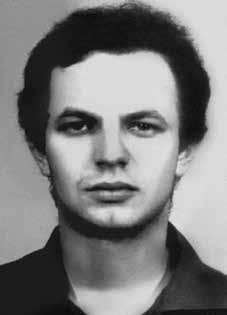

Lauriberto
José
Reyes
CIRCUNSTÂNCIAS DA MORTE
Lauriberto José Reyes morreu no dia 27 de fevereiro de 1972. A versão oficial divulgada à época informava que Lauriberto e outro companheiro do Molipo, Alexander José Ibsen Voerões, teriam sido mortos em confronto armado com as forças de segurança do Estado. Segundo nota policial de 1972, Alexander e Lauriberto teriam sido mortos na rua Serra de Botucatu, no bairro do Tatuapé, na zona leste de São Paulo. A morte desses militantes teria decorrido de intenso tiroteio, sendo também morto um funcionário público aposentado, Napoleão Felipe Biscaldi, morador do local. Em nota do jornal Folha de S.Paulo, de 29 de fevereiro de 1972, ter-se-ia responsabilizado os militantes pelo tiro que levou Napoleão à morte. A requisição de exame necroscópico, encaminhada pelo Departamento de Ordem Social e Política de São Paulo (DOPS/SP) ao Instituto Médico-Legal (IML), informava que, após travar tiroteio com os agentes dos órgãos de segurança, Lauriberto “foi ferido e, em consequência veio a falecer”. Naquele mesmo dia, foi emitido o laudo do exame necroscópico confirmando a versão oficial e apresentando como causa mortis “lesões traumáticas crânio-encefálicas”. O exame do corpo descreve, ainda, quatro tiros: “um no ombro esquerdo, um na coxa direita e dois na cabeça: um no olho esquerdo e outro na porção média da região frontal”. Passados mais de 40 anos, investigações sobre esse episódio revelaram a existência de inúmeros elementos que permitem apontar que a versão divulgada à época não se sustenta. Apesar de resultar em violenta ação policial, não foi realizada nenhuma perícia que permitisse a comprovação do suposto tiroteio relatado. Não foram localizados documentos que apresentassem a relação das armas utilizadas, nem fotos do local do confronto; dessa forma, não foi possível estabelecer a dinâmica dos acontecimentos que culminaram na morte desses militantes. Investigações conduzidas pela CEMDP apontaram, ainda, a existência de contradições nas informações que foram divulgadas pela imprensa da época. A CEMDP, após examinar documentos relativos ao caso, passou a considerar a possibilidade de que esses militantes tenham sido, de fato, executados. As requisições de exame ao IML/SP solicitadas pelo DOPS/SP, em 27 de fevereiro de 1972, apresentam a letra T manuscrita, que indicava indivíduos considerados “terroristas” pelos órgãos da repressão. Não foi encontrada perícia de local nem sequer fotos dos corpos que permitissem um exame por parte de peritos. Deste modo, foi impossível reconstruir a dinâmica do evento. Em meados de 1997, com o auxílio da Comissão de Familiares de Mortos e Desaparecidos Políticos, novas investigações foram realizadas com o intuito de esclarecer o caso. De acordo com o depoimento de Adalberto Barreiro, que na época dos fatos residia em rua paralela ao local do suposto tiroteio, havia um jovem que tentava correr, mancando e segurando a perna, quando passou um Opala branco com policiais armados de metralhadora, com metade do corpo para fora do carro, atirando. Primeiro, atingiram Napoleão Felipe Biscaldi – um funcionário público aposentado antigo morador da (Serra de) Botucatu, que atravessava a rua; depois balearam o rapaz que mancava. O rapaz aparentemente foi morto na hora. Os policiais o jogaram no porta-malas do carro. As ruas estavam cercadas de policiais. Adalberto também contou que viu uma moça japonesa presa dentro do Opala e que os policiais comentavam que outro militante também tinha sido morto no outro quarteirão. Outro depoimento recolhido pelos membros da Comissão de Familiares foi prestado por Maria Celeste Matos, também antiga moradora do local. Com muito medo ainda, ela narrou que naquele domingo o Esquadrão da Morte comandou a ação militar que fez um cerco em toda a extensão da rua. De acordo com ela, seu filho e o de Napoleão estavam jogando bola juntos quando ocorreu o tiroteio. Ao chamar o filho para casa, ela e o marido haviam visto um menino ser morto e colocado no porta-malas do carro da polícia. Imaginando que fosse o filho deles, seu marido falou com o Esquadrão da Morte e ficou perto do carro até que os policiais abriram o porta-malas e mostraram não se tratar do seu filho. Nessa ocasião teriam informado, ainda, ser o corpo de um “terrorista”. Segundo relato dos moradores, que presenciaram o episódio, ao contrário da versão oficial, nenhum dos militantes chegou a sacar a arma. Ressaltaram, inclusive, que o corpo de Napoleão ficou cinco horas na rua aguardando perícia, enquanto os corpos dos dois militantes já haviam sido levados. Lauriberto e Alexander foram examinados pelos legistas Isaac Abramovitc e Walter Sayeg, encarregados de confirmar as falsas versões da morte. O laudo de Napoleão Biscaldi, entretanto, foi assinado por ouro legista, Paulo Alterfelder. Em depoimento prestado no dia 15 de junho de 1997, Arthur Machado Scavone, exmilitante do Molipo, afirma que, enquanto esteve preso no Hospital Militar de Mandaqui, para recuperar-se de ferimentos sofridos em decorrência de perseguição política, tomou conhecimento da morte de Lauriberto. De acordo com o depoimento de Arthur Machado, no ano de 1972 recebeu a visita de um integrante da Operação Bandeirantes de São Paulo, o capitão José. Nas palavras do depoente, o capitão José, com um “sorriso indisfarçável comemorava mais uma captura e morte”. O capitão teria afirmado ao preso: “Desta vez pegamos gente grande. Lembra dele?”. Arthur foi confrontado com um recorte de jornal onde era possível ler a notícia da morte de Lauriberto. O parecer da CEMDP, com base nas evidências apresentadas, foi que a intenção da operação não era a de prender os dois militantes “e sim matá-los”. Os restos mortais de Lauriberto foram enterrados no cemitério de São Carlos por seus familiares.
Lauriberto José Reyes died on February 27, 1972. The official version released at the time stated that Lauriberto and another Molipo companion, Alexander José Ibsen Voerões, had been killed in an armed confrontation with the State security forces. According to a police note from 1972, Alexander and Lauriberto were killed on Rua Serra de Botucatu, in the Tatuapé neighborhood, in the east zone of São Paulo. The death of these militants was said to have resulted from intense gunfire, with a retired public servant, Napoleão Felipe Biscaldi, a local resident, also killed. In a note from the newspaper Folha de S.Paulo, dated February 29, 1972, the militants were blamed for the shot that led to Napoleon's death. The request for a necroscopic examination, sent by the Department of Social Order and Politics of São Paulo (DOPS/SP) to the Instituto Médico-Legal (IML), stated that, after engaging in a shootout with security agents, Lauriberto “was injured and, as a result, died”. That same day, the necroscopic examination report was issued confirming the official version and presenting “traumatic brain injuries” as the cause of death. The examination of the body also describes four shots: “one in the left shoulder, one in the right thigh and two in the head: one in the left eye and the other in the middle portion of the frontal region”. More than 40 years later, investigations into this episode revealed the existence of numerous elements that allow us to point out that the version published at the time is not sustainable. Despite resulting in violent police action, no investigation was carried out to prove the alleged reported shooting. No documents were found that presented a list of the weapons used, nor photos of the scene of the confrontation; Therefore, it was not possible to establish the dynamics of the events that culminated in the deaths of these militants. Investigations conducted by CEMDP also highlighted the existence of contradictions in the information released by the press at the time. CEMDP, after examining documents relating to the case, began to consider the possibility that these militants had, in fact, been executed. The examination requests to the IML/SP requested by the DOPS/SP, on February 27, 1972, show the handwritten letter T, which indicated individuals considered “terrorists” by the repression bodies. No site investigation was found, nor were there any photos of the bodies that would allow an examination by experts. Therefore, it was impossible to reconstruct the dynamics of the event. In mid-1997, with the assistance of the Commission of Relatives of Political Dead and Disappeared, new investigations were carried out with the aim of clarifying the case. According to the testimony of Adalberto Barreiro, who at the time of the events lived on a street parallel to the location of the alleged shooting, there was a young man who was trying to run, limping and holding his leg, when a white Opala passed by with police officers armed with machine guns, with half their body outside the car, shooting. First, they hit Napoleão Felipe Biscaldi – a retired civil servant and former resident of (Serra de) Botucatu, who was crossing the street; then they shot the boy who was limping. The boy was apparently killed instantly. The police threw him into the trunk of the car. The streets were surrounded by police. Adalberto also said that he saw a Japanese girl trapped inside Opala and that the police commented that another militant had also been killed on the other block. Another statement collected by members of the Family Committee was given by Maria Celeste Matos, also a former resident of the place. Still very scared, she said that that Sunday the Death Squad led the military action that laid siege to the entire length of the street. According to her, her son and Napoleon's son were playing ball together when the shooting occurred. When calling her son home, she and her husband had seen a boy killed and placed in the trunk of the police car. Imagining that it was their son, her husband spoke to the Death Squad and stayed near the car until the police opened the trunk and revealed that it was not their son. On that occasion, they also reported that it was the body of a “terrorist”. According to reports from residents who witnessed the episode, contrary to the official version, none of the militants actually drew their weapons. They even highlighted that Napoleon's body remained on the street for five hours awaiting forensic examination, while the bodies of the two militants had already been taken. Lauriberto and Alexander were examined by coroners Isaac Abramovitc and Walter Sayeg, in charge of confirming the false versions of death. Napoleão Biscaldi's report, however, was signed by the coroner, Paulo Alterfelder. In a statement given on June 15, 1997, Arthur Machado Scavone, a former member of Molipo, states that, while he was imprisoned at the Mandaqui Military Hospital, to recover from injuries suffered as a result of political persecution, he learned of Lauriberto's death. According to Arthur Machado's testimony, in 1972 he received a visit from a member of Operation Bandeirantes from São Paulo, Captain José. In the words of the deponent, Captain José, with an “undisguised smile, celebrated yet another capture and death”. The captain reportedly told the prisoner: "This time we caught big people. Do you remember him?" Arthur was confronted with a newspaper clipping where it was possible to read the news of Lauriberto's death. CEMDP's opinion, based on the evidence presented, was that the intention of the operation was not to arrest the two militants “but to kill them”. Lauriberto's remains were buried in the São Carlos cemetery by his family.
Lauriberto José Reyes murió el 27 de febrero de 1972. La versión oficial difundida en ese momento señalaba que Lauriberto y otro compañero de Molipo, Alexander José Ibsen Voerões, habían sido asesinados en un enfrentamiento armado con las fuerzas de seguridad del Estado. Según una nota policial de 1972, Alexander y Lauriberto fueron asesinados en la Rua Serra de Botucatu, en el barrio de Tatuapé, en la zona este de São Paulo. Se dijo que la muerte de estos militantes se debió a intensos disparos, y que también murió un funcionario público jubilado, Napoleão Felipe Biscaldi, residente local. En una nota del periódico Folha de S.Paulo, del 29 de febrero de 1972, se culpaba a los militantes del disparo que provocó la muerte de Napoleón. La solicitud de examen necroscópico, enviada por el Departamento de Orden y Política Social de São Paulo (DOPS/SP) al Instituto Médico-Legal (IML), afirma que, después de un tiroteo con agentes de seguridad, Lauriberto “resultó herido y, como resultado, murió”. Ese mismo día se emitió el informe del examen necroscópico confirmando la versión oficial y presentando como causa de muerte “lesiones cerebrales traumáticas”. El examen del cuerpo también describe cuatro disparos: “uno en el hombro izquierdo, uno en el muslo derecho y dos en la cabeza: uno en el ojo izquierdo y otro en la porción media de la región frontal”. Más de 40 años después, las investigaciones sobre este episodio revelaron la existencia de numerosos elementos que permiten señalar que la versión publicada en su momento no es sostenible. A pesar de que resultó en una acción policial violenta, no se llevó a cabo ninguna investigación para probar el presunto tiroteo denunciado. No se encontraron documentos que presentaran una lista de las armas utilizadas, ni fotografías del lugar del enfrentamiento; Por lo tanto, no fue posible establecer la dinámica de los hechos que culminaron con la muerte de estos militantes. Las investigaciones realizadas por el CEMDP también pusieron de relieve la existencia de contradicciones en la información difundida por la prensa de la época. El CEMDP, después de examinar los documentos relacionados con el caso, comenzó a considerar la posibilidad de que estos militantes hubieran sido ejecutados. Las solicitudes de examen al IML/SP solicitadas por el DOPS/SP, el 27 de febrero de 1972, muestran la letra T manuscrita, que indicaba individuos considerados “terroristas” por los órganos de represión. No se encontró ninguna investigación del lugar ni fotografías de los cadáveres que permitieran un examen por parte de peritos. Por tanto, fue imposible reconstruir la dinámica del suceso. A mediados de 1997, con el apoyo de la Comisión de Familiares de Muertos y Desaparecidos Políticos, se realizaron nuevas investigaciones con el objetivo de esclarecer el caso. Según el testimonio de Adalberto Barreiro, quien al momento de los hechos vivía en una calle paralela al lugar del presunto tiroteo, había un joven que intentaba correr cojeando y sujetándose la pierna, cuando pasó un Opala blanco con policías armados con ametralladoras, con la mitad del cuerpo afuera del auto, disparando. Primero, golpearon a Napoleão Felipe Biscaldi, funcionario jubilado y ex residente de (Serra de) Botucatu, que cruzaba la calle; Luego le dispararon al niño que cojeaba. Al parecer el niño murió instantáneamente. La policía lo metió en el maletero del coche. Las calles estaban rodeadas de policías. Adalberto también dijo que vio a una niña japonesa atrapada dentro de Opala y que la policía comentó que en la otra cuadra también habían asesinado a otro militante. Otra declaración recogida por miembros del Comité de Familia la dio María Celeste Matos, también ex habitante del lugar. Aún muy asustada, contó que ese domingo el Escuadrón de la Muerte encabezó la acción militar que sitió toda la calle. Según ella, su hijo y el hijo de Napoleón estaban jugando a la pelota juntos cuando se produjo el tiroteo. Cuando llamaron a su hijo a casa, ella y su marido vieron cómo mataban a un niño y lo metían en el maletero del coche de policía. Imaginando que era su hijo, su marido habló con el Escuadrón de la Muerte y permaneció cerca del coche hasta que la policía abrió el maletero y reveló que no era su hijo. En esa oportunidad, también informaron que se trataba del cuerpo de un “terrorista”. Según los vecinos que presenciaron el episodio, contrariamente a la versión oficial, ninguno de los militantes sacó sus armas. Incluso destacaron que el cuerpo de Napoleón permaneció en la calle durante cinco horas a la espera de un examen forense, mientras que los cuerpos de los dos militantes ya habían sido trasladados. Lauriberto y Alexander fueron examinados por los forenses Isaac Abramovitc y Walter Sayeg, encargados de confirmar las versiones falsas de la muerte. El informe de Napoleão Biscaldi, sin embargo, fue firmado por el médico forense Paulo Alterfelder. En declaración prestada el 15 de junio de 1997, Arthur Machado Scavone, ex militante de Molipo, afirma que, mientras estaba recluido en el Hospital Militar de Mandaqui, para recuperarse de las heridas sufridas como consecuencia de la persecución política, se enteró de la muerte de Lauriberto. Según el testimonio de Arthur Machado, en 1972 recibió la visita de un integrante de la Operación Bandeirantes de São Paulo, el Capitán José. En palabras del declarante, el Capitán José, con una “sonrisa indisimulada, celebró una nueva captura y muerte”. Según los informes, el capitán le dijo al prisionero: "Esta vez atrapamos a gente grande. ¿Te acuerdas de él?". Arthur se encontró con un recorte de periódico donde se podía leer la noticia de la muerte de Lauriberto. La opinión del CEMDP, basada en las pruebas presentadas, fue que la intención del operativo no era arrestar a los dos militantes “sino matarlos”. Los restos de Lauriberto fueron enterrados en el cementerio de São Carlos por su familia.